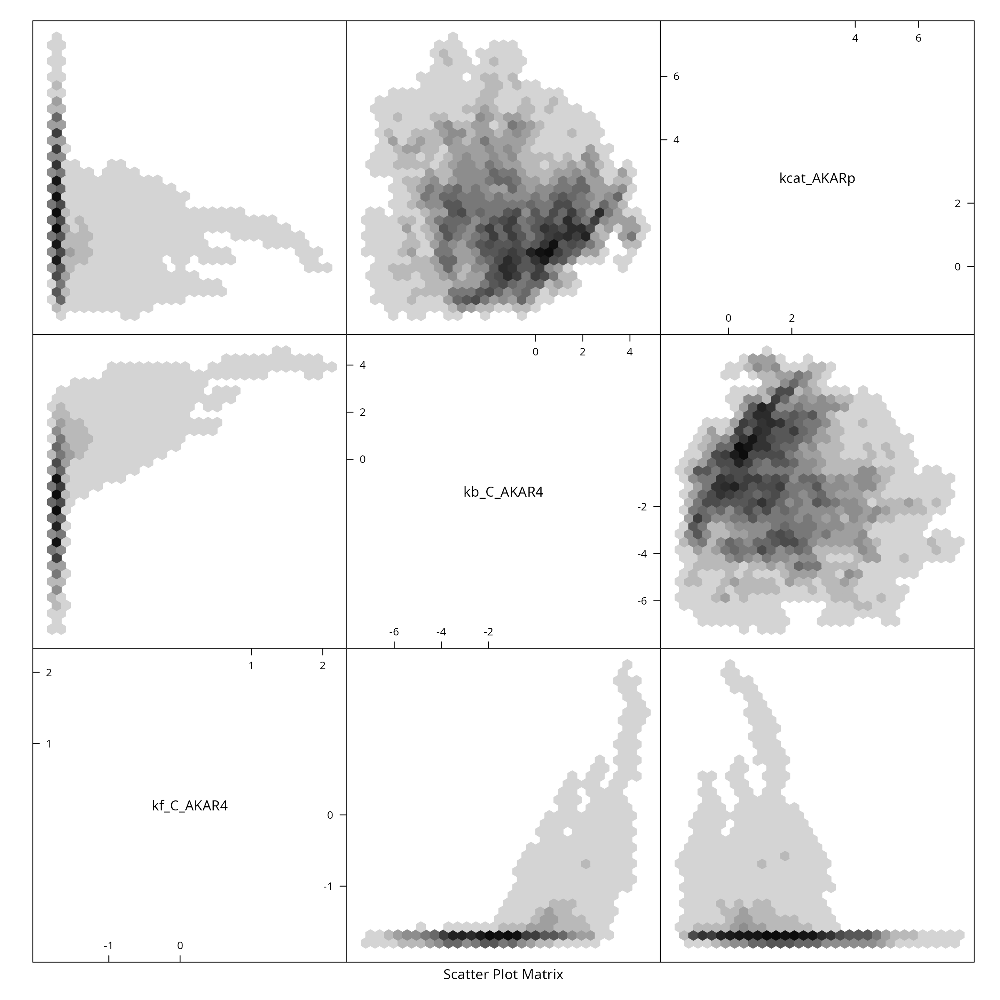
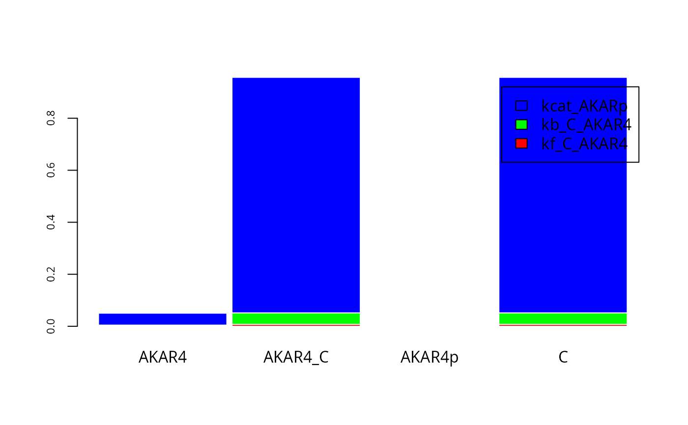
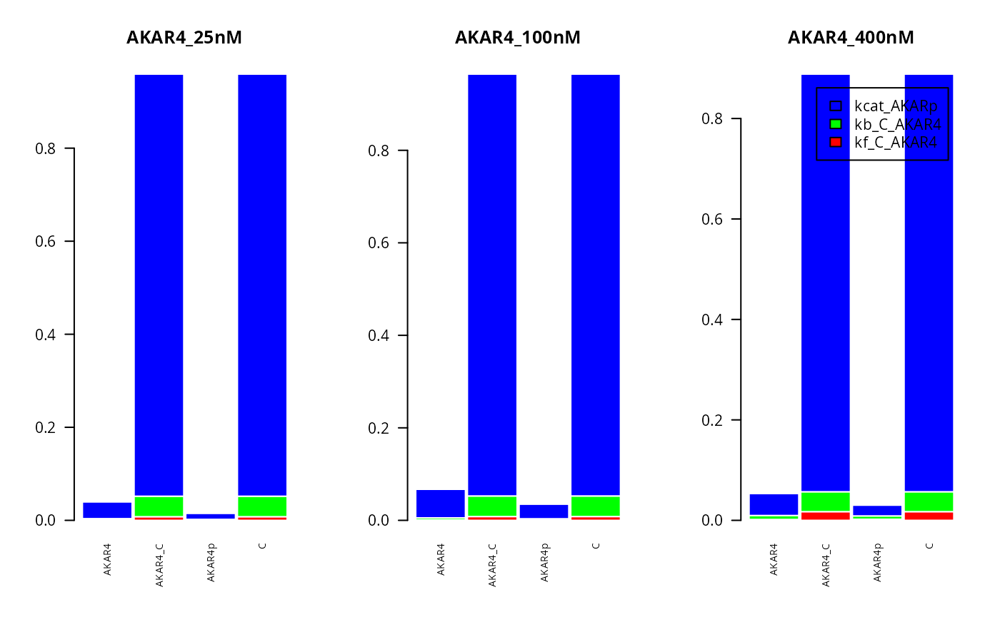
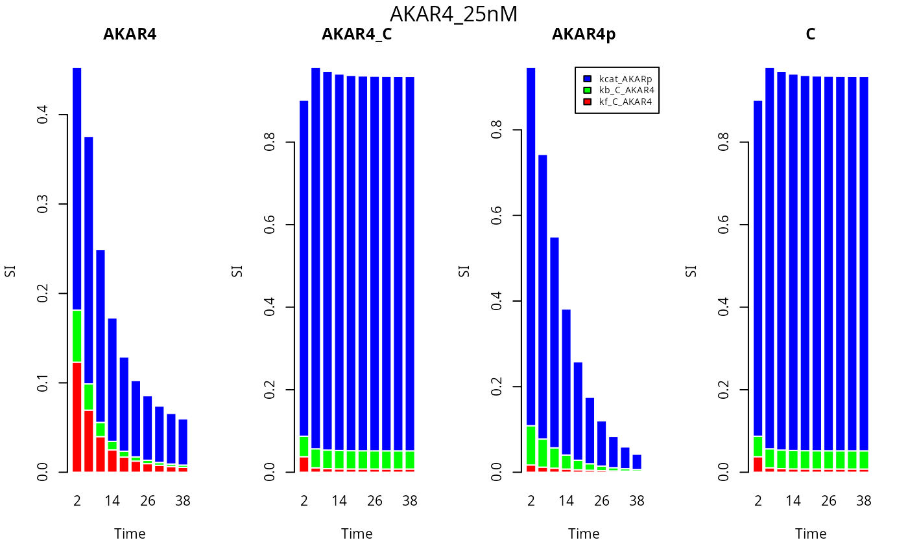

Uncertainty Quantification and global Sensitivity Analysis on AKAR4 (deterministic)
uqsaAKAR4.RmdLoad Model and Data
First we load the model and data, for detailed explanations see previous examples (Simulate AKAR4 deterministically).
f <- uqsa::uqsa_example("AKAR4")
sb <- SBtabVFGEN::sbtab_from_tsv(f)
m <- SBtabVFGEN::sbtab_to_vfgen(sb, cla=FALSE)
ex <- SBtabVFGEN::sbtab.data(sb)
C <- uqsa::generateCode(m)
cat(C,sep="\n",file="./AKAR4_gvf.c")
modelName <- checkModel("AKAR4",modelFile="./AKAR4_gvf.c")Uncertainty quantification: Sample the posterior distribution
For details on how to sample from the posterior distribution, see, e.g., the deterministic AKAR4 example. First we construct the prior:
sd <- rep(2,length(p))
dprior <- dNormalPrior(p,sd)
rprior <- rNormalPrior(p,sd)
llf <- logLikelihoodFunc(ex)
#> experiments contain 675 non-missing values
metropolis_hastings <- mcmcUpdate(s,ex,logLikelihood=llf,dprior=dprior)
MH_MCMC <- mcmc(metropolis_hastings)We obtain a high quality sample by following the steps described in details in the deterministic AKAR4 example). This will take a minute or so on a laptop.
A <- function(a) {
return(0.5 + a^4/(0.25^4 + a^4))
}
set.seed(137)
h <- 5e-2
N <- 3e4
nCores <- parallel::detectCores()
bigSample <- parallel::mclapply(
seq(nCores),
\(i) {
x <- mcmcInit(
1.0,
parMCMC=t(rprior(1)),
simulate=s,
logLikelihood=llf,
dprior=dprior)
## adjust acceptance rate to 25% via step-size h
for (i in seq(30)){
z <- MH_MCMC(x,200,h)
x <- attr(z,"lastPoint")
h <- h*A(attr(z,"acceptanceRate"))
}
return(MH_MCMC(x,N,h))
},
mc.cores=nCores
)
S_ <- Reduce(\(a,b) {rbind(a,b)},bigSample,init=NULL)
L_ <- Reduce(\(a,b) {c(a,attr(b,"logLikelihood"))},bigSample,init=NULL)
colnames(S_) <- names(p)
Sensitivity analysis on the posterior distribution
First we need to (re-)create the simulation result corresponding to the posterior parameter sample. This will take a minute or so on a laptop.
Next we calculate the first order sensitivity indexes. Here for compute them for a specific experimental setting and time point:
E <- 2 # Experiment idx
T <- 60 # Time idx
fM <- y[[E]]$state[,T,]
SIappr <- globalSensitivity(S_, t(fM), nBins = "Sturges")and plot the result:
cols=rainbow(3)
par(mfrow = c(1, 1))
fM <- y[[E]]$state[,T,]
barplot(t(SIappr),
col=cols,
border="white",
space=0.04,
cex.axis=0.7,
legend.text=sb$Parameter[,1])
Here for compute the first order sensitivity indexes for all three experiments, looking at the different compounds in the system (on the x axis):
T <- 200 #Time idx
par(mfrow = c(1, 3))
for (E in 3:1){
fM <- y[[E]]$state[,T,]
SIappr <-globalSensitivity(S_, t(fM) , nBins = "Sturges")
lgd <- list(sb$Parameter[,1], NULL,NULL)
barplot(t(SIappr),
col=cols,
cex.names = 0.7,
las=2,
border="white",
space=0.04,
cex.axis=1,
main=names(ex)[E],
legend.text=lgd[[E]])
}
Now we investigate the first order sensitivity indexes at different time points (time is on the x axis) for each of the compounds and one experiment.
E <- 3
timePts <- seq(2,40,by=4) #Avoid first time point
nStates=dim(y[[E]]$state)[1]
cols=rainbow(3)
par(mfrow = c(1, nStates))
lgd <- rep(list(NULL),nStates)
lgd[[nStates-1]] <- sb$Parameter[,1]
for (Cm in 1:nStates) {
fM <- y[[E]]$state[Cm,timePts,]
SIappr <-globalSensitivity(S_, t(fM) , nBins = "Sturges")
names(SIappr) <- timePts
barplot(t(SIappr),
col=cols,
names.arg = timePts,
border="white",
cex.axis=1,
main=dimnames(y[[E]]$state)[[1]][Cm],
xlab="Time",
ylab="SI",
legend.text=lgd[[Cm]],
args.legend = list(x = "topright", inset=c(-0.1, 0), cex=0.7)
)
}
mtext(names(ex[E]), side=3, line = - 1.5,outer=TRUE)